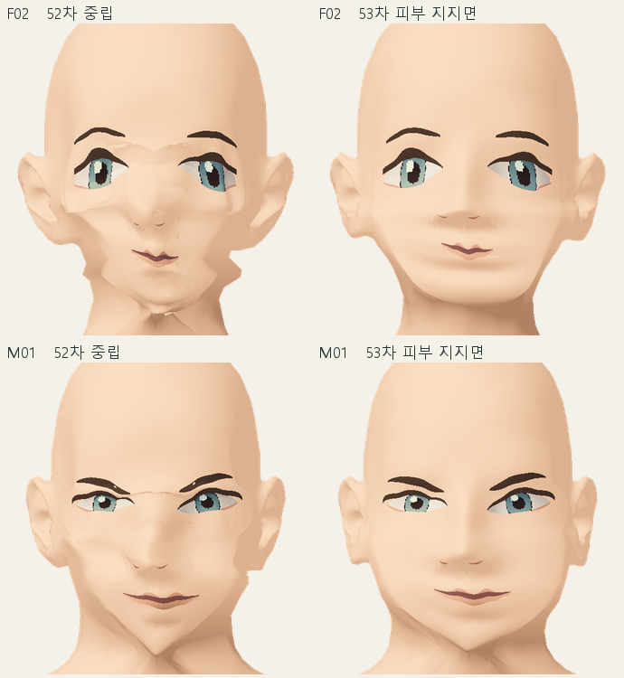
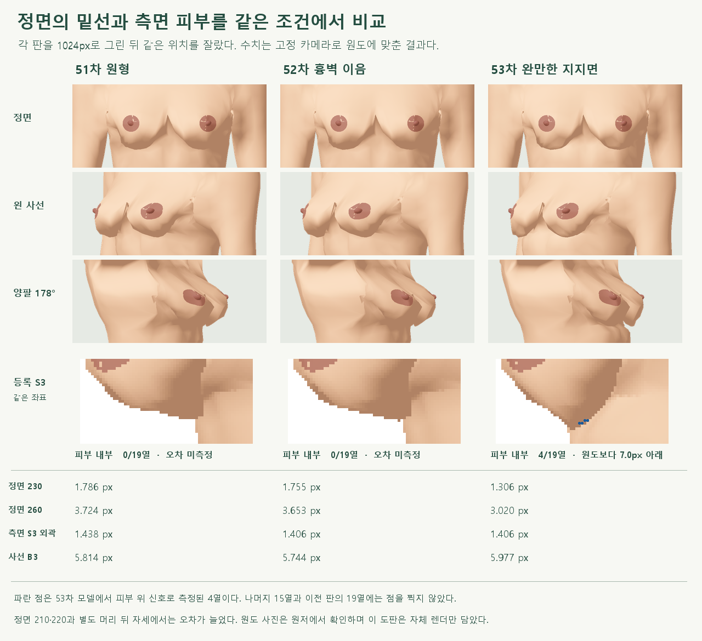
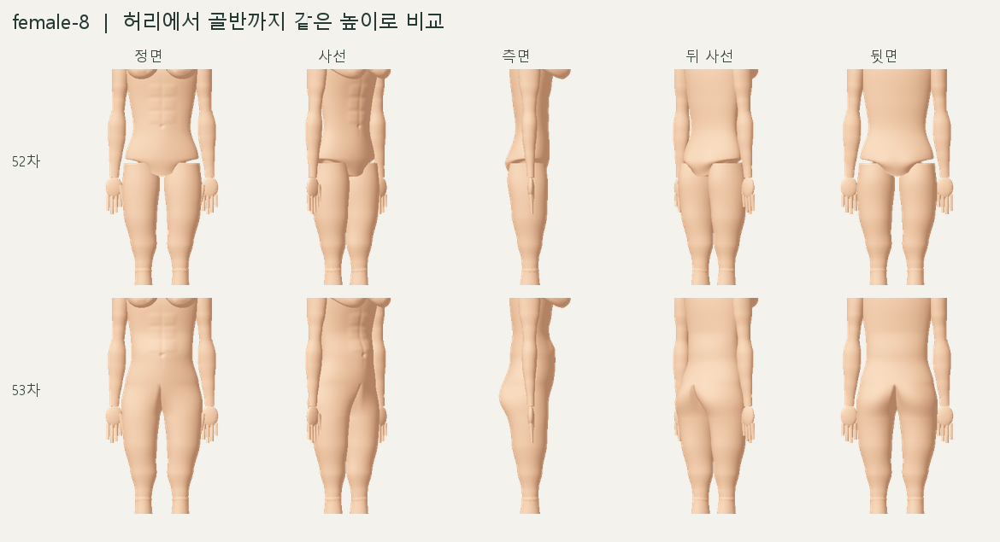

같은 얼굴을 돌렸을 때 턱이 어떻게 보이는가
정면의 눈 밑이 판처럼 들뜨고 턱을 따라 윤곽이 다시 벌어지던 부분을 고쳤다. 페른은 1024px 정면에서 오른볼이 도로 벌어지던 폭이 22→1px로 줄었다. 그러나 별도로 남겨 둔 37화 저각 원화에 맞대면 턱선 오차가 7.265→17.952px로 늘었다. 힘멜도 14화의 고개 숙인 장면에서 11.598→12.839px였다. 카메라 각도를 흔들어 다시 재어도 이 두 장면의 판정은 같았다. 두 얼굴 모두 직접 선택하는 비교 시안이다.

가슴 아래쪽에서 배경선과 피부 안쪽 선을 구별하기
52차의 측면 측정은 도판의 피부 안쪽 음영과 모델의 피부·배경 경계를 서로 맞대고 있었다. 흉벽 지지면을 제한한 53차에서 앞뒤로 피부가 확인되는 19열 중 4열에 대응하는 안쪽 선이 생겼다. 그 4열도 원도와 평균 7px 차이가 난다. 옆 외곽 오차는 52차와 같은 1.406px였고 사선 밑선은 5.744→5.977px로 나빠졌다. 성인 W는 비교 단계다. 다른 유형 15개는 같은 크기에서 보이는 기저부 너비와 깊이 분포를 바꿔 자세를 함께 보았다.

허리 두께와 골반의 열린 틈
52차 모델의 골반 아래와 양다리 사이로 배경이 보였다. 허리의 앞뒤 두께만 고치는 첫 시안으로는 이 틈이 남았다. 골반의 한 고리와 허벅지 두 고리를 연결한 뒤, 같은 조건에서 접선까지 다시 맞췄다. 실험실에서 전신을 골라 ‘모델 → 외형 조합 → 허리·골반’을 열면 52차 원형, 단면 교정, 피부 연결을 바꾸어 볼 수 있다. 조작판의 가로는 허리 폭, 세로는 깊이다. 숫자 입력과 되돌리기도 함께 쓸 수 있다.
